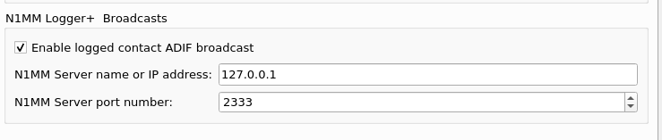

|
WARNING! Backup your data often! BACKUP your log directory at the end of EVERY session! All that you need to backup and store in a safe place is the log database directory located in the ~/.config/cqrlog/database folder, or you can enable the autobackup function in Preferences. This autobackup function creates an ADIF file with a backup of your log. /td> |
| [Menu] |

N1MM logger remote connection is just for copying logged qso infromation from other program like wsjt-x or js8call (or similars that support this kind of logging) to cqrlog. There is no other finctionality than just transfer the logged data. Remote mode is activated from NewQSO/File selection list, or pressing Ctrl+K when NewQSO window is focused.
 Settings must be done at wsjt-x or js8call Settings/reporting. At least checking the checkbox. Port and address values can be defaults.
 No indication of logging can be seen unless user has set "cqrlog/preferences/NewQSO/Show recent qso records for last X days" active.
If this is set, after pressing "OK" at companion program's logging window logged qso will appear to cqrlog's NewQSO recent qsos list.
No indication of logging can be seen unless user has set "cqrlog/preferences/NewQSO/Show recent qso records for last X days" active.
If this is set, after pressing "OK" at companion program's logging window logged qso will appear to cqrlog's NewQSO recent qsos list.
N1MM remote can not be used at same time as fldigi or wsjt remotes. How ever if you allow N1MM logger support at wsjt-x and js8call settings and choose remote mode for N1MM from cqrlog you can keep both programs running at same time if your rigctld settings support that. See: setting_rigctld_for_all_programs, and log qsos from both programs to cqrlog without problems.
| [Menu] |